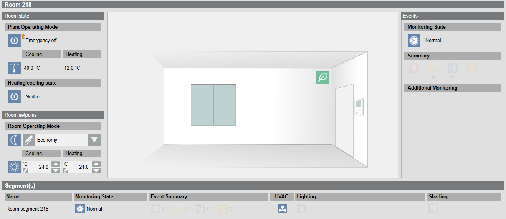
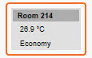
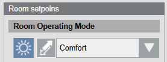

Room
Depending on the installed room application, the operating workspace for a room can vary.

Changing the Room Operating Mode
Scenario: The office is occupied for longer than usual. Central functions has already set the Room Operating Mode to Economy. You want to set it back to Comfort.
- In System Browser, select Graphics .
- Double-click the room symbol

. - Select Room setpoints > Room Operating Mode.
- In the drop-down list box, select Comfort

. - The operating mode is reset to Comfort.
- Click Previous .
- The air handling unit displays.
Changing the Room Setpoints
Scenario: The temperature in your office is too high or too low.
- In System Browser, select Graphics .
- Double-click the room symbol .
- Select Room setpoints.
- Too warm: Select Cooling and enter a lower set value.
- Too cold: Select Heating and enter a higher set value.
NOTE: The heating set value must be above the cooling set value. - The room is operated according to the new set values.
NOTE: Depending on the size of the room, it may take a while until the room has reached the set value. - Click Previous .
- The air handling unit displays.
Switching Lighting On and Off
Scenario: You want to switch on the light in your office.
- In System Browser, select Graphics .
- Double-click the room symbol .
- Select Segments.
- Select the display in the Light column.
- Do the following:
- Manual mode:
a. Select the Lighting command property and click Manual.
b. In the Value drop-down list, enter a new value.
c. Click Send. - Automatic mode:
a. Select the Lighting command property and click Auto. - Click Previous .
- The air handling unit displays.
Positioning Blinds
Scenario: By default, blinds are controlled automatically. Their operation is dependent on installed switches, presence detector, and room request. You can raise and lower blinds for individual segments as needed.
- In System Browser, select Graphics .
- Double-click the room symbol .
- Select Segments.
- Select the Shading column.
- Do the following:
- Change angle position:
a. Select the property Angle blinds command and click Manual.
b. In the Value drop-down list, enter the new value.
c. Click Send. - Open or close blinds:
a. Select the property Height blinds command and click Manual.
b. In the Value drop-down list, enter the new value.
c. Click Send. - Click Previous .
- The air handling unit displays.